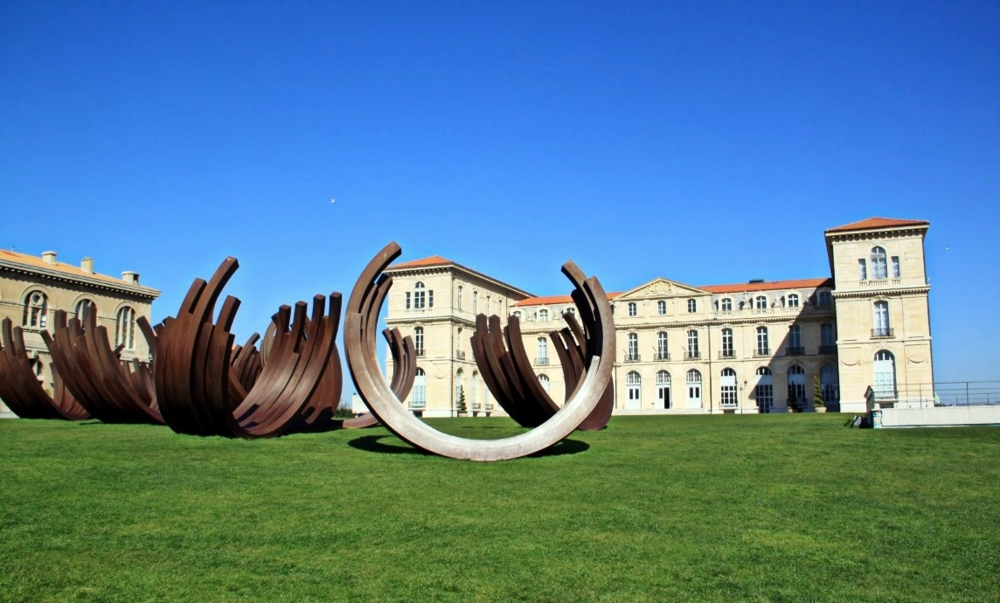
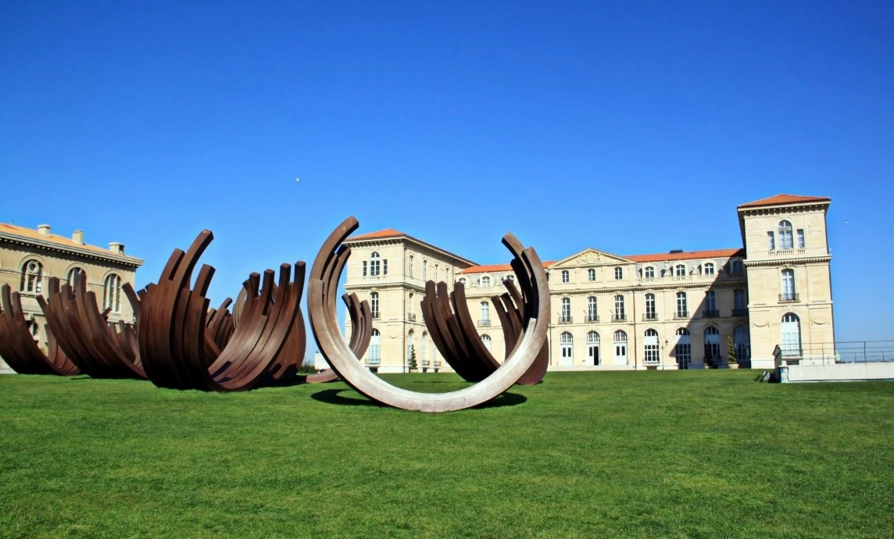

Parc Borély : ouvert toute l'année de 6h30 à 21h
Attention :
le jardin botanique Edouard-Marie Heckel -
qui se trouve au sein du parc Borély - a des horaires plus restreints que le parc :
du mardi au vendredi de 12h à 17h30 - du 1er octobre 2022 au 31 mars 2023.
du mardi au vendredi de 12h à 19h - du 1er avril au 30 septembre 2023.
les samedis, dimanches et jours fériés de 10h à 17h30 - du 1er octobre 2022 au 31 mars 2023.
les samedis, dimanches et jours fériés de 10h à 19h - du 1er avril au 30 septembre 2023.
Jardin du Pharo : ouvert toute l'année de
7h à 21h
Parcs : Parc balnéaire du Prado (8e), Bonneveine (8e), Corbusier (8e), Henri Fabre (8e), Pastré (8e),Valbarelle (8e),
Colline Saint-Joseph (9e), Bruyères (10e), Vieux Moulin (10e), Mirabelle (12e), Athéna (13e), Marie du 13e, La Ravelle (13e),
Saint-Théodore (13e), Val Plan (13e), L'Espérance (14e), Font-Obscure (14e), Grand Séminaire (14e), Brégante (15e), Jougarelle (15e),
la Calade (15e) , L'Oasis (15e), Varella (15e), Espace Mistral (16e), La Pelouque (16e) : ouverts toute l'année 24/24h.
Jardins : Corinthe (6e), Lacédémone (6e), La Mathilde (9e), Micocouliers (10e), Saint-Marcel (11e ) : Ouverts toute l'année 24/24h
LES MESURES PRISES EN PÉRIODE DE SÉCHERESSE ET DE RESTRICTIONS D'EAU
En période de séchesse - conformément aux directives du Plan départemental d'actions en période de sécheresse -
la Ville de Marseille applique scrupuleusement les directives liées aux arrêtés préfectoraux quand ils prévoient des restrictions d'eau.
Consultez notre actu dédiée
La Ville de Marseille procéde alors - dans les arrondissements concernés ou sur l'ensemble de la commune - à l'arrêt :
des jeux d'eau dans tous les parcs et jardins marseillais et l'irrigation de toutes les pelouses et les prairies ;
des fontaines fonctionnant en circuit ouvert.
LES PARCS PROPOSANT DES JEUX D'EAU
Parc du Grand Séminaire
Rue Paul Coxe (14e)
Parc de Font Obscure
Avenue Prosper Mérimée (14e)
Parc François Billoux
246 Rue de Lyon (15e)
Parc de la Calade
Chemin de la Madrague-Ville (15e)
Espace Mistral
147, plage de l'Estaque (16e)
À noter que des brumisateurs ont été installés dans le parc de la porte d'Aix (Place Jules Guesde - 3e) depuis son ouverture le 4 juillet 2022.
À NOTER POUR L'ENSEMBLE DES PARCS ET JARDINS
L'évacuation du public débute 1/2 d'heure avant l'heure de fermeture légale.
Les aires de jeux sont utilisables mais restent placées sous la responsabilité des parents, qui doivent
s'assurer du respect des consignes sanitaires et notamment la distanciation physique.
les pique-niques sont autorisés dans les parcs publics sous condition du respect de la distanciation sociale,
le regroupement ne doit pas être supérieur à 10 personnes.
En cas de circonstances exceptionnelles notamment météorologiques, ou pour tout motif d'intérêt général,
en particulier pour des raisons de sécurité, l'accès aux parcs et jardins publics peut être interdit partiellement ou en totalité et son évacuation décidée.
La circulation piétonne est prioritaire dans tous les espaces verts.
L'accès, la circulation et le stationnement de tout véhicule ou engin à moteur (thermique et/ou électrique),
des cycles et de façon générale de tout véhicule susceptible de compromettre la sécurité et la tranquillité des promeneurs sont interdits (sauf dispositions contraires).
Pour des raisons de sécurité, les barbecues sont interdits dans les parcs et jardins marseillais.
Peut-on prendre des photos à l'intérieur des parcs et jardins ?
oui, à titre privé
non, si c'est dans un but commercial. Dans ce cas, une autorisation est nécessaire.
Elle doit être demandée au service Images et Médias - "Maison diamantée" - 3 rue de la Prison - 13002 Marseille
Admission des animaux à l'intérieur des parcs et jardins
L'accès des animaux de compagnie est strictement interdit dans les parcs et jardins.
Cependant, l'accès est autorisé dans certains espaces clos ou non clos. Les conditions d'accès sont, dans ce cas,
affichées aux entrées des espaces concernés.
Les chiens de 2e catégorie doivent obligatoirement être tenus en laisse et muselés.
Les chiens de 1ère catégorie sont, quant à eux, strictement interdits.
Les chiens de personnes malvoyantes, d'assistance aux personnes en situation de handicap,
des services de police et de sauvetage sont autorisés dans tous les espaces verts de la Ville de Marseille.
Présence autorisée aux chiens dans les parcs
Un patrimoine vert unique reconnu au travers de plusieurs distinctions
Trois jardins remarquables
La cité phocéenne compte
deux jardins remarquables (label décerné par le ministère de la Culture et de la Communication depuis 2005) :
Borély (8e),
26e Centenaire (10e).
Deux jardins classés au titre des monuments historiques
Parc Longchamp (4e)
Site archéologique du Port antique (1er) (également connu sous l'ancienne appellation de Jardin des Vestiges).
Des jardins labellisés "ÉcoJardin"
Central de Bonneveine et Bortoli (8e),
Colline Saint-Joseph (9e),
Saint-Cyr (10e),
La Buzine (11e),
La Moline (12e),
Athéna (13e)
L'Oasis (15e),
L'attribution du label "ÉcoJardin" reconnaît ainsi les efforts quotidiens entrepris depuis 2006,
contribuant au retour de la nature en ville, à travers :
l'accroissement de l'utilisation de végétaux méditerranéens,
la suppression de produits phytosanitaires issus de la chimie de synthèse,
la maîtrise de l'eau,
l'accroissement de la biodiversité animale et végétale.
Marseille poursuit son objectif d'obtenir ce label, à terme, dans chaque arrondissement.
Par ailleurs, depuis 2007, Marseille détient 2 fleurs au Concours national des villes et villages fleuris.
Informations diverses sur les parcs et jardins marseillais
Arbres d'exception
Certains arbres ou groupes d'arbres, qu'ils soient sur le domaine public ou privé, méritent, de par leurs dimensions,
leurs caractéristiques, leur histoire, leur situation ou leur rareté, d'être connus et répertoriés.
Les caractéristiques des arbres d'exception :
l'âge et les dimensions : ce sont surtout les arbres isolés qui peuvent atteindre de grandes dimensions et couvrir une grande surface qu'il conviendra de préciser.
En principe, on retiendra comme critères, une circonférence de tronc au moins égale à 3 m ou une hauteur supérieure à 30 m.
l'aspect, la forme : les facteurs naturels, le vent, la sécheresse, le froid, la foudre, les tempêtes, les conditions édaphiques (relatives à la nature du sol) peuvent modifier, de manière spectaculaire, l'aspect des arbres tel que le développement de formes rampantes, la nanification, l'obtention de formes tourmentées ou originales.
La taille des arbres peut également modifier l'aspect des arbres et donner des sujets remarquables.
l'arbre peut aussi être remarquable du fait de son association avec une chapelle un oratoire, un puits, une source, des ruines, une plaque commémorative
l'histoire, la référence : comme le Château d'If, l'arbre peut être le témoin de faits historiques ou d'oeuvres littéraires, picturales, cinématographiques, ceci en tant que tel ou - comme dans le cas précédent - comme repère géographique.
Il peut avoir été planté par en l'honneur d'un personnage célèbre ou important.
Il peut être l'un des premiers sujets plantés lors de l'introduction d'une nouvelle espèce ou variété.
la rareté de l'espèce : l'arbre peut au niveau du lieu, de la ville, du département, voire au-delà ou au niveau de la zone climatique,
être le seul exemplaire connu d'une espèce donnée ou assez rare pour être, de ce fait, riche d'enseignements sur les conditions de son implantation ou sur ses propres caractéristiques.
La Direction des parcs et jardins, qui a pour missions la promotion, la gestion et la valorisation du patrimoine naturel et paysager
marseillais ainsi que le maintien et la restauration de la biodiversité, a mis au point une fiche permettant le recensement des
arbres d'exception sur le territoire marseillais.
Télécharger les informations sur le recensement des arbres d'exception (PDF)
Télécharger la fiche de signalement d'un arbre d'exception (PDF)
Jardins partagés
Marseille compte 66 jardins partagés , pour une superficie totale de plus de 4 hectares. 18 d'entre eux sont signataires de la charte et conventionnés avec la Ville de Marseille
Un jardin partagé est un espace collectif dont s'occupe un groupe d'habitants d'un quartier, sur un terrain plus ou moins délaissé, un square oublié, un pied d'immeuble, ou encore un espace en attente de projet.
Jardins d'agrément, jardins potagers, jardins pédagogiques, terrains de jeux ou tout cela à la fois,
les jardins partagés favorisent les rencontres entre les générations et les cultures, réinventent les rapports entre voisins,
facilitent les échanges d'expériences et de savoirs, et développent l'esprit de solidarité.
En savoir plus sur les jardins partagés à Marseille

 
